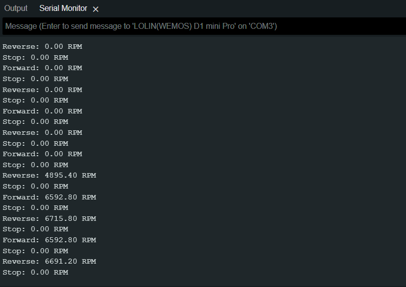

Photo Interrupter
The KTIR6011S is an infrared emitter and phototransistor pair enclosed in a single package. This type of device is commonly used for reflective object sensing, proximity sensing, and encoder applications for instance ot monitor the motors speed by counting the interrupts in via the spokes of a wheel.
In order to understand the this component it is important to review the supporting technical documentation:
Developing the script
-
Create a new a script call it something meaningful like,
motor_speed.ino -
Start by adding the standard header information about the script
-
Next we need to set the global variables needed throughout the script:
-
Now we can sort of the setup block so that we permentatly set the mux to the right channel and baudrate for the Serial:
-
Penultimately we are going to fill the void loop with the core functionality of programme:
... void loop(){ digitalWrite(D5, LOW); // Motor Forward analogWrite(D0, 500); // you change the speed here delay(1000); calculateSpeed("Forward"); digitalWrite(D0, LOW); // Motor Stop analogWrite(D5, LOW); delay(1000); calculateSpeed("Stop"); digitalWrite(D0, LOW); // Motor Reverse analogWrite(D5, 500); // you change the speed here delay(1000); calculateSpeed("Reverse"); digitalWrite(D0, LOW); // Motor Stop analogWrite(D5, LOW); delay(1000); calculateSpeed("Stop"); } -
Finally, we can add write the bit of code tha calcualtes the motor speed based on the number of...
void calculateSpeed(){ // read motor_speed = analogRead(A0); delay(500); //Eliminate analogue input noise give motor chance to slow down/speed up if (motor_speed < noise_threshold) { motor_speed = 0; } //Calibrate motor speed motor_speed = motor_speed * motor_speed_conversion_factor; Serial.print(motor_speed); Serial.println(" RPM"); } -
If you run the code you should see the following output:

-
Try experimenting with the motor speed via the
anologWrite()function:analogWrite(D5, 500);, where 500 is the DAC value that will map to 1.7v- 0v - 3.2v map to 0 to 1024 DAC value
Full code below
Click here:
Click here:
/*
* AUTHORS: YOUR NAMES
* VERSION: 1.0.0
* NOTES:
* - Motor Speed is calculated using the Ktir0611s Photo Interrupter
* - Motor will go forward, reverse and then stop in a loop and show speed in RPM
*/
// set variables
const int noise_threshold = 20;
const float motor_speed_conversion_factor = 24.6;
float motor_speed;
void setup(){
// initialise the serial
Serial.begin(9600);
pinMode(D0, OUTPUT); //PWM
pinMode(D3, OUTPUT); //Mux A
pinMode(D4, OUTPUT); //Mux B
pinMode(D5, OUTPUT); //Direction
pinMode(A0, INPUT); //Analogue input
//Motor speed reading
digitalWrite(D3, LOW);
digitalWrite(D4, LOW);
}
void loop(){
digitalWrite(D5, LOW); // Motor Forward
analogWrite(D0, 500); // you change the speed here
delay(1000);
calculateSpeed("Forward");
digitalWrite(D0, LOW); // Motor Stop
analogWrite(D5, LOW);
delay(1000);
calculateSpeed("Stop");
digitalWrite(D0, LOW); // Motor Reverse
analogWrite(D5, 500); // you change the speed here
delay(1000);
calculateSpeed("Reverse");
digitalWrite(D0, LOW); // Motor Stop
analogWrite(D5, LOW);
delay(1000);
calculateSpeed("Stop");
}
void calculateSpeed(String state){
// read
motor_speed = analogRead(A0);
delay(500);
if(motor_speed < noise_threshold){
motor_speed = 0;
}
//Calibrate motor speed
motor_speed = motor_speed * motor_speed_conversion_factor;
Serial.print(state);
Serial.print(": ");
Serial.print(motor_speed);
Serial.println(" RPM");
}